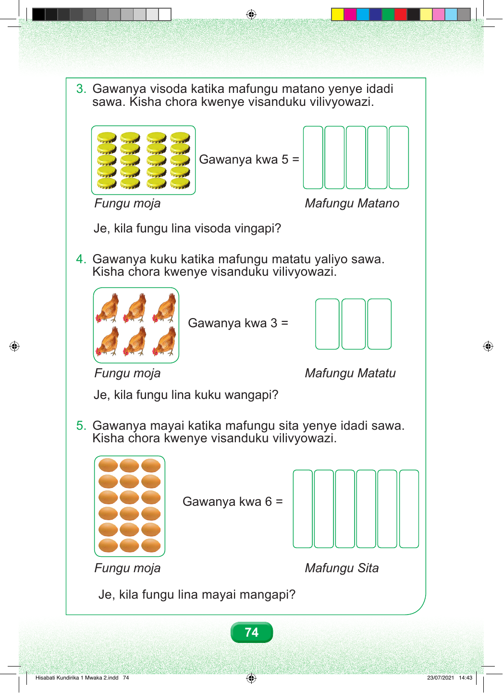

3. Gawanya visoda katika mafungu matano yenye idadi sawa. Kisha chora kwenye visanduku vilivyowazi. Gawanya kwa 5 = Fungu moja Mafungu Matano Je, kila fungu lina visoda vingapi? 4. Gawanya kuku katika mafungu matatu yaliyo sawa. Kisha chora kwenye visanduku vilivyowazi. Gawanya kwa 3 = Fungu moja Mafungu Matatu Je, kila fungu lina kuku wangapi? 5. Gawanya mayai katika mafungu sita yenye idadi sawa. Kisha chora kwenye visanduku vilivyowazi. Gawanya kwa 6 = Fungu moja Mafungu Sita Je, kila fungu lina mayai mangapi? 74 Hisabati Kundirika 1 Mwaka 2.indd 74 23/07/2021 14:43